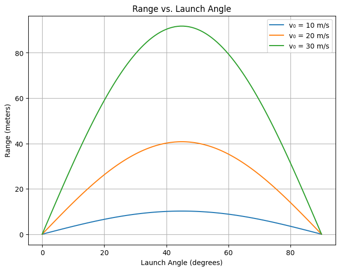

Problem 1:
Investigating the Range as a Function of the Angle of Projection
1. Problem Statement
The aim of this project is to deeply explore how the horizontal range of a projectile depends on the launch angle \(\theta\), assuming no air resistance. Although the range equation looks simple, its implications and derivation offer valuable understanding of 2D motion under gravity.
2. Motivation & Importance
Projectile motion appears frequently in engineering, sports, military applications, and planetary science. From designing robotic arms to simulating cannon trajectories or space launches—mastering this topic equips learners with key analytical tools.
3. Theoretical Foundation
3.1. Assumptions
To simplify our analysis, we assume:
- The projectile is launched from ground level.
- No air resistance.
- Constant gravitational acceleration (\(g \approx 9.81\) m/s²).
3.2. Key Equations
Horizontal and Vertical Components:
If the initial velocity is \(v_0\) and the launch angle is \(\theta\), the velocity components are:
Time of Flight (T):
The projectile returns to the same vertical level when \(y(t) = 0\). Using vertical motion:
We take the non-zero solution:
Range (R):
The horizontal distance traveled during this time is:
💡 Insight: This equation shows that the range depends on the square of the initial speed and the sine of twice the launch angle.
3.3. Implications of the Range Formula
- Maximum range occurs when \(\sin(2\theta)\) is maximized ⇒ \(2\theta = 90^\circ\) ⇒ \(\theta = 45^\circ\).
- \(\sin(2\theta)\) is symmetric about \(45^\circ\), so angles like \(30^\circ\) and \(60^\circ\) produce equal ranges.
- Larger \(v_0\) leads to a longer range.
- Higher \(g\) (e.g., on Jupiter) reduces the range.
4. Graphical Analysis
Let’s use Python to plot \(R\) vs. \(\theta\) for different \(v_0\) values.
import numpy as np
import matplotlib.pyplot as plt
def compute_range(v0, theta_deg, g=9.81):
theta_rad = np.radians(theta_deg)
return (v0**2 * np.sin(2 * theta_rad)) / g
angles = np.linspace(0, 90, 100)
velocities = [10, 20, 30]
plt.figure(figsize=(9, 6))
for v in velocities:
ranges = [compute_range(v, angle) for angle in angles]
plt.plot(angles, ranges, label=f'v₀ = {v} m/s')
plt.title('Projectile Range vs. Launch Angle')
plt.xlabel('Launch Angle θ (degrees)')
plt.ylabel('Range R (meters)')
plt.grid(True)
plt.legend()
plt.tight_layout()
plt.show()

5. Real-World Applications
-
Sports: Calculating the optimal angle for a football throw.
-
Engineering: Determining nozzle angles for sprinkler systems.
-
Military: Artillery targeting under various launch conditions.
-
Space: Simulating projectile motion on Mars, where \(g \approx 3.71\) m/s².